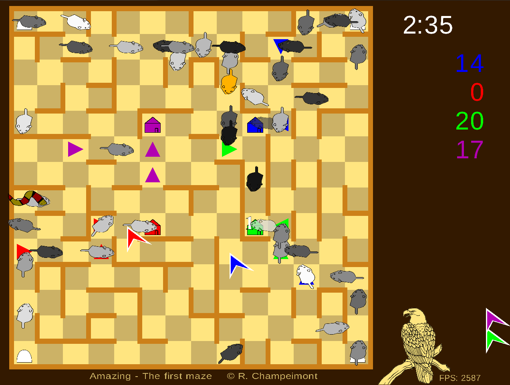
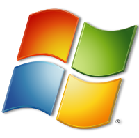

{kind=link}
 Download MiceAmaze source code for Linux
Download MiceAmaze source code for LinuxYou will need to know how to compile a program. You have the choice between two archives:
 MiceAmaze is a free video game that features a maze with mice and snakes. The goal is to bring the most mice to your house by placing arrows on the maze floor. But beware the snakes that want to eat them!
Features:
New features since version 1.8:
Download MiceAmaze for Windows (XP, Vista, 7, 8)
Download MiceAmaze source code for Linux
You will need to know how to compile a program. You have the choice between two archives:
Mice will appear continuously. Your goal is to bring more mice to your house than other players before the time is over.
Arrows: If you play using your mouse, you have 2 ways to place arrows, either use left-click/right-click/wheel-up/wheel-down, or click and maintain pressed then go to one direction and release. If you play using the keyboard, use the arrows to move the cursor and I,J,K,L to place arrows. In any case, you cannot place more than 3 arrows.
Snakes will eat mice they meet until they get sick of eating too much and die. If a snake reaches your house, you loose 10 points.
The golden mouse will trigger a special event for 10 seconds. These are: mouse mania (much more mice appear), snake attack (many snakes appear), color madness (new mice are randomly colored), eagle (you get the eagle which prevents snakes from attacking you).
You have a good idea to make a maze? It is very simple to make one, simply go in the mazes directory and create a text file with a similar syntax as the others (the maze format is kind of an ASCII art representation of the maze, click here to see an example). You can send me (almacha AT almacha.org) your maze and I will include it in the next release, with its title and your name shown under it (by sending it, you allow unlimited redistribution and modification).
MiceAmaze is open source, licensed under the BSD 2-clause license.
The full C++ source code for building the Windows and Linux versions is available:
Copyright (c) 2012, Raphael CHAMPEIMONT - Contact: almacha AT almacha.org